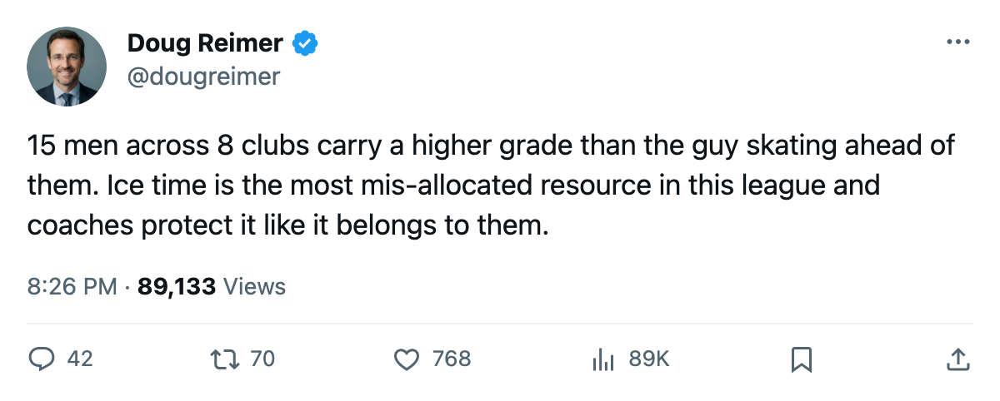
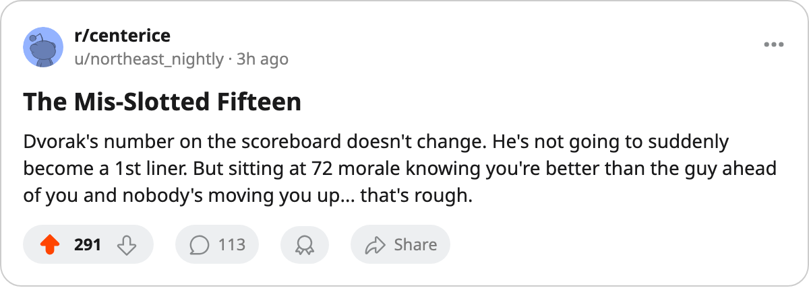

CGY
CGY ANA
ANA TOR
TORThe Mis-Slotted Fifteen: 8 Clubs Buried Players the Book Rates 3 to 10 Points Above Their Line-Mates
Ice time is the most mis-allocated resource in hockey. Here are the 15 players whose minutes don't match their grades.
 Doug ReimerAnalytics editor, ex-video coach · The Slot Report
Doug ReimerAnalytics editor, ex-video coach · The Slot Report
The piece
Fifteen players across 8 clubs carry a higher Book grade than the forward or defenseman they play behind at their position. The gap runs from 3 points to 10. I ranked every one by the rating spread between the buried player and the man rated below him who gets the higher slot.
The method is simple. I took every third- and fourth-liner in the league whose overall grade exceeds the grade of the player ahead of him on the same line at the same position, and I computed the difference. Where the difference is 3 points, a coach can argue he likes the chemistry. Where it is 9 or 10, he is burning ice time on a man the Bureau says cannot do the job.
The four cases that are hardest to defend
 Radek Dvorak75 of
Radek Dvorak75 of  Carolina Hurricanes is the single most expensive mis-slot in hockey. He carries a 75 overall, earns $3.20M with 2 years left on his deal, and skates 9.4 minutes a night on the third line. The right wing playing top-six minutes for Carolina,
Carolina Hurricanes is the single most expensive mis-slot in hockey. He carries a 75 overall, earns $3.20M with 2 years left on his deal, and skates 9.4 minutes a night on the third line. The right wing playing top-six minutes for Carolina,  Jaroslav Svoboda66, carries a 66. That is a 9-point gap. Carolina pays Dvorak more than twice what they pay the man ahead of him for a worse player by the Book's math.
Jaroslav Svoboda66, carries a 66. That is a 9-point gap. Carolina pays Dvorak more than twice what they pay the man ahead of him for a worse player by the Book's math.
Dvorak's morale reads 72. That ties him for the lowest number in the league. His club average is 87.9, which is also the lowest of any room. The connection is obvious: a man who knows his grade and sees his minutes going to a player rated 9 points below him will not be happy.
 Matt Cullen73 of
Matt Cullen73 of  Buffalo Sabres has the widest gap on the sheet: 10 points. His 73 puts him above
Buffalo Sabres has the widest gap on the sheet: 10 points. His 73 puts him above  Brian Swanson63 at 63, who plays the second line. Cullen skates on the third line at center and has 3 years left on the deal. Buffalo sits 11th in the East at 41 points, 4 back of the eighth spot, and they are running a center on the third line who is rated 10 points higher than their second-line center.
Brian Swanson63 at 63, who plays the second line. Cullen skates on the third line at center and has 3 years left on the deal. Buffalo sits 11th in the East at 41 points, 4 back of the eighth spot, and they are running a center on the third line who is rated 10 points higher than their second-line center.
 Rod Brind'Amour78 at 78 skates the third line for Carolina.
Rod Brind'Amour78 at 78 skates the third line for Carolina.  Steve Rucchin74 at 74 plays second line. Four points separates them. That is a gap a coach can argue. What he cannot argue is that a captain earning $3.20M more than his second-line center is parked on the checking line. Brind'Amour has 3 years left.
Steve Rucchin74 at 74 plays second line. Four points separates them. That is a gap a coach can argue. What he cannot argue is that a captain earning $3.20M more than his second-line center is parked on the checking line. Brind'Amour has 3 years left.
Brian Holzinger76 of  Pittsburgh Penguins at 76 plays third-line center and penalty kill.
Pittsburgh Penguins at 76 plays third-line center and penalty kill.  Kris Beech73 at 73 plays the second line. Three points separate them, which is defensible. But Pittsburgh's payroll is $48.92M, the 2nd-cheapest in hockey, and every line slot is a resource they cannot afford to waste.
Kris Beech73 at 73 plays the second line. Three points separate them, which is defensible. But Pittsburgh's payroll is $48.92M, the 2nd-cheapest in hockey, and every line slot is a resource they cannot afford to waste.
The full board
| Player | Club | Pos | Overall | Slot | Above | Gap | Yrs | Morale |
|---|---|---|---|---|---|---|---|---|
| Radek Dvorak | CAR | RW | 75 | L3 | 66 | 9 | 2 | 72 |
| Matt Cullen | BUF | C | 73 | L3 | 63 | 10 | 3 | 87 |
| Alexei Smirnov73 | ANA | LW | 73 | L3 | 63 | 10 | 0 | 94 |
| Paul Gaustad72 | BUF | C | 72 | L4 | 63 | 9 | 0 | 94 |
| Jason Krog69 | ANA | LW | 69 | L4 | 63 | 6 | 2 | 94 |
 Keith Carney72 Keith Carney72 | ANA | D | 72 | L3 | 65 | 7 | 5 | 94 |
 Todd Reirden71 Todd Reirden71 | ANA | D | 71 | L3 | 65 | 6 | 2 | 94 |
 Daniel Tjarnqvist70 Daniel Tjarnqvist70 | ANA | D | 70 | L3 | 65 | 5 | 0 | 94 |
| Rod Brind'Amour | CAR | C | 78 | L3 | 74 | 4 | 3 | 87 |
| Marc-Andre Bergeron75 | VAN | D | 75 | L3 | 71 | 4 | 0 | 100 |
 Jordan Leopold71 Jordan Leopold71 | CGY | D | 71 | L3 | 67 | 4 | 4 | 94 |
 Petr Buzek71 Petr Buzek71 | CGY | D | 71 | L3 | 67 | 4 | 1 | 94 |
 Patrice Brisebois77 Patrice Brisebois77 | PHX | D | 77 | L3 | 74 | 3 | 1 | 86 |
 Alexander Mogilny89 Alexander Mogilny89 | TOR | RW | 89 | L3 | 86 | 3 | 1 | 98 |
| Brian Holzinger | PIT | C | 76 | L3 | 73 | 3 | 0 | 88 |
What the morale line says
The clubs doing the worst mis-slotting also happen to have the worst morale. Carolina sits at 87.9, 2nd-worst in the league. Buffalo sits at 91.7, 8th-worst. The two clubs with the most mis-slotted players by count (ANA with 5) sit at 92.6, which is 11th-worst.
The three cases where the gap is 9 or 10 points are Dvorak (75 behind a 66), Cullen (73 behind a 63), and Smirnov (73 behind a 63). All three are rated top-six talent by the Bureau and skate bottom-six minutes.

The Mogilny case is different
Alexander Mogilny at 89 skates the third right wing slot in Toronto.  Maxim Afinogenov86 at 86 skates the second. Three points separate them. Mogilny is 36, carries 29 points in 41 games, has 1 year left at $5.50M, and his morale is 98. He looks comfortable. The gap is small, the salary is expiring, and the room average is 93.1. This is a coach managing a veteran's workload, not a mis-allocation of resource.
Maxim Afinogenov86 at 86 skates the second. Three points separate them. Mogilny is 36, carries 29 points in 41 games, has 1 year left at $5.50M, and his morale is 98. He looks comfortable. The gap is small, the salary is expiring, and the room average is 93.1. This is a coach managing a veteran's workload, not a mis-allocation of resource.
The same applies to Bergeron in Vancouver and Holzinger in Pittsburgh: small gaps, low salaries, expiring or near-expiring deals. A coach gets the benefit of the doubt when the numbers are close and the money is cheap.
The ones that need fixing
Dvorak at 9 and Cullen at 10 are not close calls. These are players the Bureau says belong one line higher and their coaches say do not. Both clubs are chasing the eighth seed: Carolina is 2 points back, Buffalo is 4. Neither can afford to leave 9 or 10 points of Book grade on the third line while a 66 or a 63 handles the top six.

